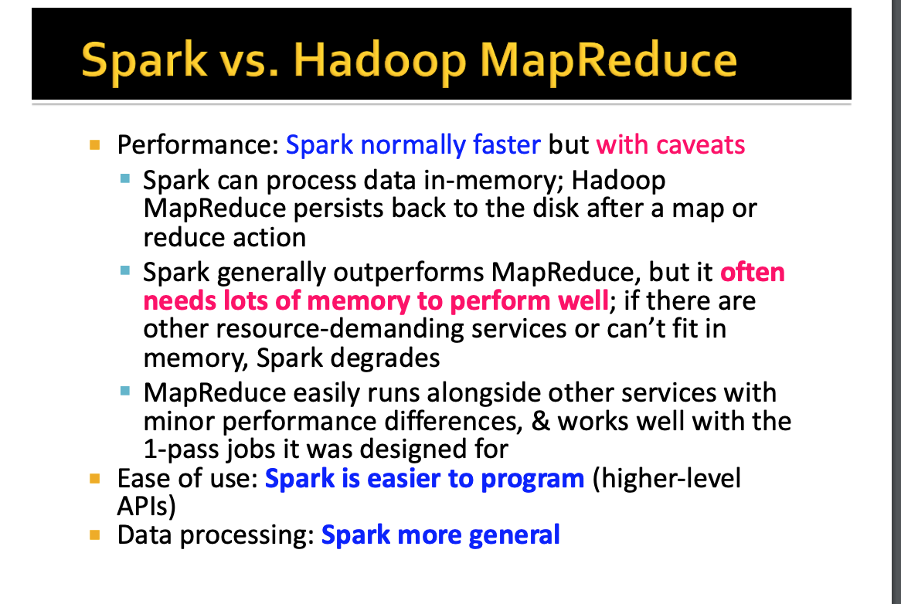
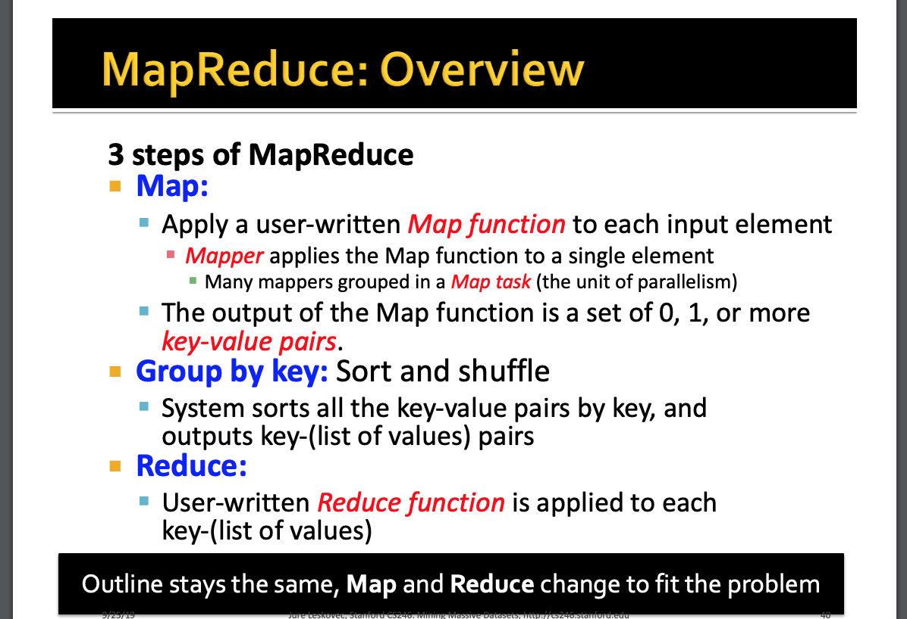
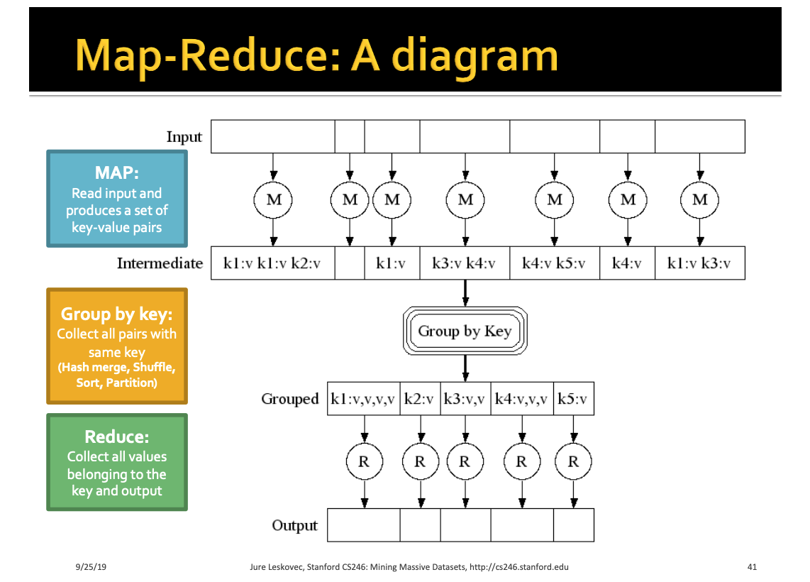
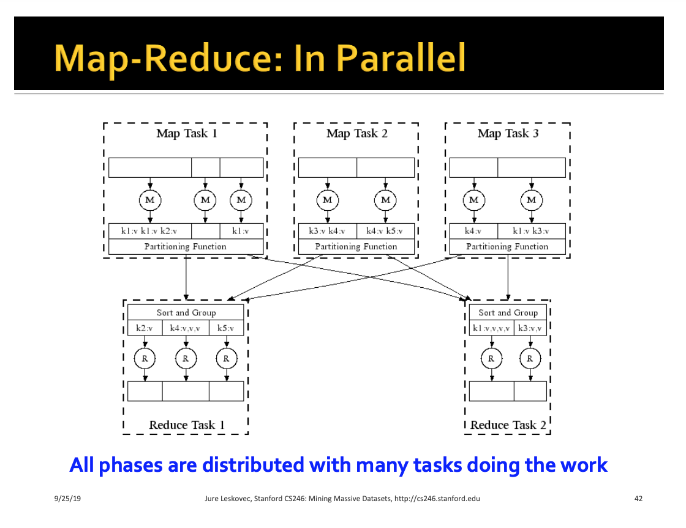
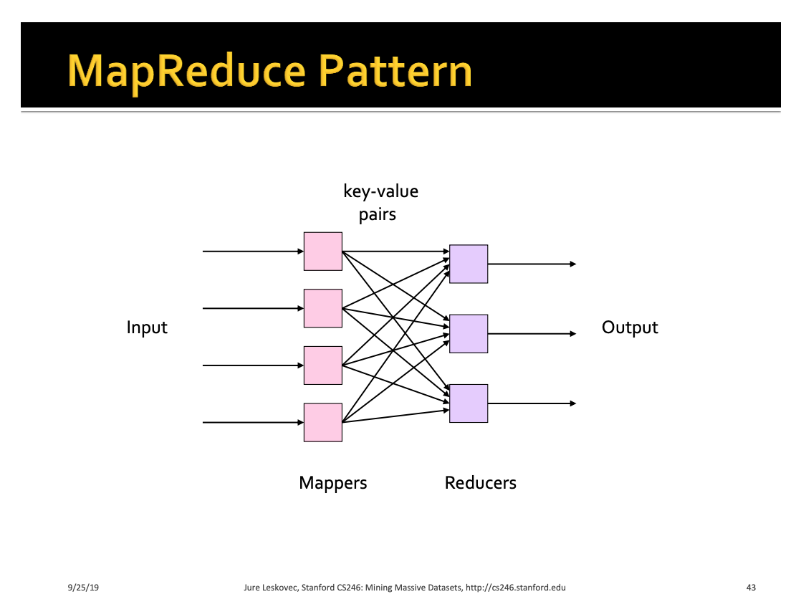
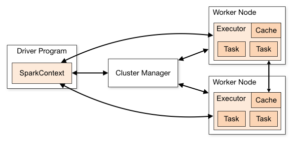
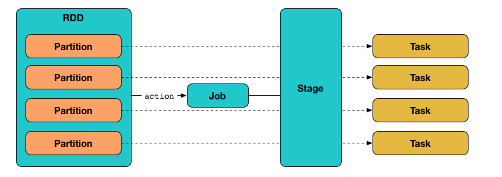
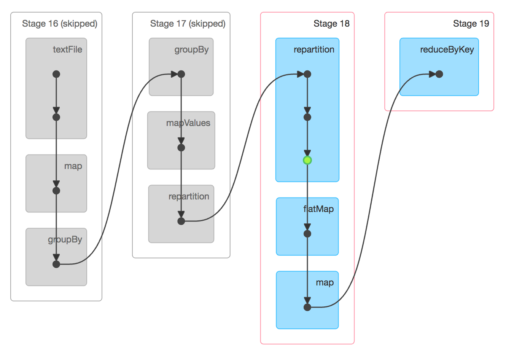
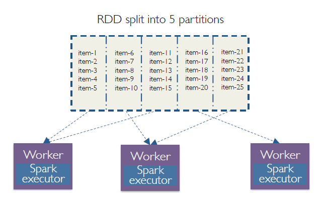
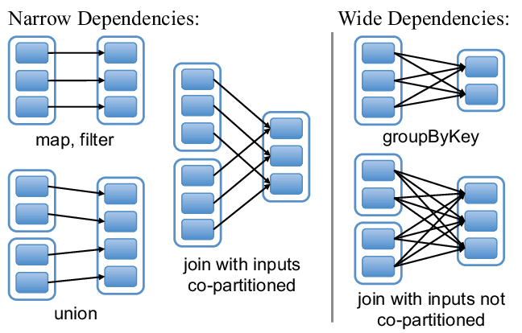

Faq Spark Hadoop
Last updated: Jul 3, 2024SPARK / HADOOP ECOSYSTEM FAQ
-
-
Spark Tutorial
-
Hadoop VS hive VS hbase VS pig VS RDBMS (in EMR system)
-
-
Difference between Spark VS Hadoop?
-
Hadoop is a big data framework that make large scale dataset operation via
Map-Reduce, do storage via split the dataset (HDFS) intodata blockand save in each node (data node)- Data node : the components save split data block
- Name node : the components manage data storage places
Doesn't save data in memorywhen do data op
-
Spark is a big data framework that access large scale dataset like above, and doing processing like : ETL, stream, machine learning and so on…
Does save data in memoryasRDDwhen do data op, so that’s why spark is faster than hadoop (since it saves data in memory when do op) (only work when data is not really inlargescale)
-
In short,
Sparkcan do more flexible data task via RDD andDAG( Map-Reduce-Map-Reduce …) ops and faster speed (data in memory), butSparkjob alsoheavy memory costing. So if the data is really in alargescale, then Spark may not be a good choice, but would useHadoopsince it only do Map-Reduce, all the momory cost is only for key-value pairs saving theoretically.

1’. What’s Map-Reduce programming model?
-
It’s a
Map -> Group by -> Reduceprocess model for scalable data transformation -
Developers only have to think about writing the code for
MapandReducepart, the execution machines will take care for theGroup bystep -
Map : map input values into
key-valuepair -
Group by : dispense key-value to cluster workers
-
Reduce : Get the computaion result of the key-value based on redue function logic
-
Pros :
- Easy model
- Not heavy memory cost
- Can be scalable
-
Cons :
- Hadoop code long
- take time to write, doesn’t offer flexible high level APIs.
- have to keep grab-release data when do
sequencemap-reduce tasks - doesn’t offer RDD features : lazy execution, call back …




- Things happen after
spark-submit?- step 1) This program invokes the main() method that is specified in the spark-submit command, which launches the driver program.
- step 2) The driver program
converts the codeintoDirected Acyclic Graph(DAG)which willhave all the RDDs and transformationsto be performed on them. ( During this phase driver program also does some optimizations and then it converts the DAG to a physical execution plan with set of stages.) - step 3) After this physical plan, driver creates small execution units called tasks. Then these tasks are sent to Spark Cluster.
- step 4) The driver program then talks to the cluster manager and requests for the resources for execution
- step 5) Then the cluster manger launches the executors on the worker nodes
- step 6) Executors will register themselves with driver program so the driver program will have the complete knowledge about the executors
- step 7) Then driver program sends the tasks to the executors and starts the execution. Driver program always monitors these tasks that are running on the executors till the completion of job.
- step 8) When the job is completed or called stop() method in case of any failures, the driver program terminates and frees the allocated resources
2’. spark-submit cmd explain ?
1# pattern
2./bin/spark-submit \
3 --master <master-url> \
4 --deploy-mode <deploy-mode> \
5 --conf <key<=<value> \
6 --driver-memory <amount of memory> \
7 --executor-memory <amount of memory> \
8 --executor-cores <number of cores> \
9 --jars <comma separated dependencies>
10 --class <main-class> \
11 <application-jar> \
12 [application-arguments]
2’’ SparkSession VS SparkContext ?
-
SparkContext
- an entry point to Spark and defined in org.apache.spark package since 1.x and used to programmatically create Spark RDD, accumulators and broadcast variables on the cluster. Since Spark 2.0 most of the functionalities (methods) available in SparkContext are also available in SparkSession. Its object sc is default available in spark-shell and it can be programmatically created using SparkContext class.
-
SparkSession
- introduced in version 2.0 and and is an entry point to underlying Spark functionality in order to programmatically create Spark RDD, DataFrame and DataSet. It’s object spark is default available in spark-shell and it can be created programmatically using SparkSession builder pattern.
- SparkSession can be used in replace with SQLContext and HiveContext.
-
https://sparkbyexamples.com/spark/sparksession-vs-sparkcontext/
- What’s RDD, HDFS ?
-
RDD
- Resilient – if data is lost, data can be recreated
- Distributed – stored in nodes among the cluster
- Dataset – initial data comes from some distributed storage
-
Resilient Distributed Datasets (RDD) is a simple and immutable distributed collection of objects. Each RDD is split into multiple partitions which may be computed on different nodes of the cluster. In Spark, every function is performed on RDDs only.
-
Spark revolves around the concept of a resilient distributed dataset (RDD), which is a fault-tolerant collection of elements that can be operated on in parallel.
-
Hadoop HDFS VS RDD
-
In Hadoop, we store the data as blocks and store them in different data nodes. In Spark, instead of following the above approach, we make partitions of the RDDs and store in worker nodes (datanodes) which are computed in parallel across all the nodes.
-
In Hadoop, we need to replicate the data for fault recovery, but in case of Spark, replication is not required as this is performed by RDDs.
-
RDDs load the data for us and are resilient which means they can be recomputed.
-
RDDs perform two types of operations: Transformations which creates a new dataset from the previous RDD and actions which return a value to the driver program after performing the computation on the dataset.
-
RDDs keeps a track of transformations and checks them periodically. If a node fails, it can rebuild the lost RDD partition on the other nodes, in parallel.
-
3’. Explain data partition in Spark?
-
Partitioning is nothing but dividing it into parts. If you talk about partitioning in distributed system, we can define it as the division of the large dataset and store them as multiple parts across the cluster.
-
Spark works on data locality principle. Worker nodes takes the data for processing that are nearer to them. By doing partitioning network I/O will be reduced so that data can be processed a lot faster.
-
In Spark, operations like co-group, groupBy, groupByKey and many more will need lots of I/O operations. In this scenario, if we apply partitioning, then we can reduce the number of I/O operations rapidly so that we can speed up the data processing.
-
To divide the data into partitions first we need to store it. Spark stores its data in form of RDDs.
-
Explain spark
master node,worker node,executor,receiver,driver…?
-
Driver
- The program that runs on the master node of the machine and declares transformations and actions on data RDDs. In simple terms, a driver in Spark creates
SparkContext, connected to a given Spark Master. The driver also delivers the RDD graphs to Master, where the standalone cluster manager runs. - The Driver is one of the nodes in the Cluster.
- The driver does not run computations (filter,map, reduce, etc).
- It plays the role of a master node in the Spark cluster.
- When you call collect() on an RDD or Dataset, the
whole datais sent to theDriver. This is why you should be careful when calling collect().
- The program that runs on the master node of the machine and declares transformations and actions on data RDDs. In simple terms, a driver in Spark creates
-
Master
- Master node is responsible for task scheduling and resource dispensation.
-
Worker
Worker node refers to any node that can run the application code in a cluster. The driver program must listen for and accept incoming connections from its executors and must be network addressable from the worker nodes.- Worker node is basically the
slave node. Master node assigns work and worker node actually performs the assigned tasks.Worker nodes process the data stored on the node and report the resources to the master. Based on the resource availability, the master schedule tasks.
-
Executor
- When SparkContext connects to a cluster manager, it acquires an Executor on nodes in the cluster. Executors are Spark processes that run computations and store the data on the worker node. The final tasks by SparkContext are transferred to executors for their execution.
- Executors are JVMs that run on Worker nodes.
- These are the JVMs that actually run Tasks on data Partitions.
-
Cluster
- A Cluster is a group of JVMs (nodes) connected by the network, each of which runs Spark, either in Driver or Worker roles.
-
-
Explain how to deal with
Spark data skewproblems ? *** -
How do if one of the spark node failed because of overloading ?
-
Why Spark is faster than MapReduce in general ?
-
Explain Spark running mode :
stand alone,Mesos,YARN?-
Spark stand anlone
- When running on standalone cluster deployment, the cluster manager is a Spark master instance.
-
Spark Mesos
- When using Mesos, the Mesos master replaces the Spark master as the cluster manager. Mesos determines what machines handle what tasks. Because it takes into account other frameworks when scheduling these many short-lived tasks, multiple frameworks can coexist on the same cluster without resorting to a static partitioning of resources.
-
Spark YARN
-
-
Explain spark operator ?
-
Explain
cacheVSpersist? -
Which one is better in RDD ?
reducebykeyVSgroupby? why? -
What errors may happen when
spark streaming? how to fix them ? -
How to prevent spark
out of memeory(OOM)problem ?
- https://medium.com/swlh/spark-oom-error-closeup-462c7a01709d
- https://dzone.com/articles/common-reasons-your-spark-applications-are-slow-or
13’ how executor memory(heap memory) is managed in spark ?
-
How does saprk split
stage? -
What’re spark work, stage, task; and there relationship ?
-
How to set up spark master HA ?
- Standby Masters with ZooKeeper
- Single-Node Recovery with Local File System
- https://spark.apache.org/docs/latest/spark-standalone.html#high-availability
- https://support.datafabric.hpe.com/s/article/How-to-enable-High-Availability-on-Spark-with-Zookeeper?language=en_US
- How does
spark-submitimport externaljars
- Explain spark Polyglot, Lazy Evaluation ?
- Polyglot
- Lazy Evaluation
- Each RDD have access to it’s parent RDD
- NULL is the value of parent for first RDD
- Before computing it’s value, it always computes it’s parent
- Spark will not execute the task untill there is a
Actionsoperation - there 2 types of RDD operation in spark :
- Transformations
- map, groupby, union, filter, flatmap…
- Actions
- reduce, count, collect, show, saveAsTextFile…
- Transformations
18’. types of Transformations?
- Narrow transformation
- all the elements that are required to compute the records in
single partitionlive in the single partition of parent RDD map,filter
- all the elements that are required to compute the records in
- Wide transformation
- In wide transformation, all the elements that are required to compute the records in the single partition may live in
many partitionsof parent RDD groupbyKey,reducebykey
- In wide transformation, all the elements that are required to compute the records in the single partition may live in
-
Is there any benefit of learning MapReduce if Spark is better than MapReduce?
- Yes, MapReduce is a paradigm used by many big data tools including Spark as well. It is extremely relevant to use MapReduce when the data grows bigger and bigger. Most tools like Pig and Hive convert their queries into MapReduce phases to optimize them better.
-
What is Executor Memory in a Spark application?
-
What operations does RDD support?
-
RDDs support two types of operations: transformations and actions.
-
Transformations: Transformations create new RDD from existing RDD like map, reduceByKey and filter we just saw. Transformations are executed on demand. That means they are computed lazily. e.g. :
map,flatmap,reducebykey,filter,union,sample -
Actions: Actions return final results of RDD computations. Actions triggers execution using lineage graph to load the data into original RDD, carry out all intermediate transformations and return final results to Driver program or write it out to file system.
-
-
-
Flatmap VS map ? Reduce VS ReduceByKey ?
-
Illustrate some cons of using Spark.
-
What is a Sparse Vector?
-
How can you minimize data transfers when working with Spark?
-
Minimizing data transfers and avoiding shuffling helps write spark programs that run in a fast and reliable manner. The various ways in which data transfers can be minimized when working with Apache Spark are:
-
Using Broadcast Variable- Broadcast variable enhances the efficiency of joins between small and large RDDs.
-
Using Accumulators – Accumulators help update the values of variables in parallel while executing.
-
The most common way is to
avoidoperationsByKey, repartitionorany other operationswhich triggershuffles. -
-
What are broadcast variables and accumulators?
-
How can you trigger automatic clean-ups in Spark to handle accumulated metadata?
- You can trigger the clean-ups by setting the parameter
spark.cleaner.ttlor by dividing the long running jobs into different batches and writing the intermediary results to the disk.
- You can trigger the clean-ups by setting the parameter
-
Explain Caching in Spark Streaming ?
- DStreams allow developers to cache/ persist the stream’s data in memory. This is useful if the data in the DStream will be computed multiple times. This can be done using the persist() method on a DStream. For input streams that receive data over the network (such as Kafka, Flume, Sockets, etc.), the default persistence level is set to replicate the data to two nodes for fault-tolerance.
-
What are the various levels of persistence in Apache Spark?
-
MEMORY_ONLY: Store RDD as deserialized Java objects in the JVM. If the RDD does not fit in memory, some partitions will not be cached and will be recomputed on the fly each time they’re needed. This is the default level.
-
MEMORY_AND_DISK: Store RDD as deserialized Java objects in the JVM. If the RDD does not fit in memory, store the partitions that don’t fit on disk, and read them from there when they’re needed.
-
MEMORY_ONLY_SER: Store RDD as serialized Java objects (one byte array per partition).
-
MEMORY_AND_DISK_SER: Similar to MEMORY_ONLY_SER, but spill partitions that don’t fit in memory to disk instead of recomputing them on the fly each time they’re needed.
-
DISK_ONLY: Store the RDD partitions only on disk. OFF_HEAP: Similar to MEMORY_ONLY_SER, but store the data in off-heap memory.
-
-
Explain
mapPartitions, what’s the difference between mapPartitions and map ? -
Explain
broadcast join, what’s the difference betweenbroadcast joinand join ? -
How to optimize spark with
partitioner? -
Explain
combineByKeyVS.groupByKey?
i.e.
1// reduceByKey
2rdd.reduceByKey(_.sum)
3
4// groupByKey
5rdd.groupByKey().mapValue(_.sum)
6
- Explain
application,job,stage,task?
-
Application->job->stage->task -
Application
- Initialize a SparkConext will generate an Application
-
Job
- A Job is a sequence of
Stages, triggered by anActionsuch as .count(), foreachRdd(), collect(), read() or write(). - An
Actionoperaor will generate a job
- A Job is a sequence of
-
Stage
- A Stage is a sequence of
Tasksthat can all be run together,without a shuffle. - e.g. : using .read to read a file from disk, then runnning .map and .filter can all be done
without a shuffle, so it can fit in asinglestage.
- A Stage is a sequence of
-
Task
- A Task is a single operation
(.map or .filter)happening on a specific RDD partition. - Each Task is executed as a single thread in an Executor
- If your dataset has 2 Partitions, an operation such as a filter() will trigger 2 Tasks, one for each Partition.
- Stage is a TaskSet, split the stage result to different Executors is a task
- A Task is a single operation
-
Each
stagecontains as manytasksaspartitionsof theRDD- i.e. partition (part of RDD) -> task (part of stage)
-
http://queirozf.com/entries/spark-concepts-overview-clusters-jobs-stages-tasks-etc#stage-vs-task
-
https://medium.com/@thejasbabu/spark-under-the-hood-partition-d386aaaa26b7
-
https://www.youtube.com/watch?v=pEWrWdt60nY&list=PLmOn9nNkQxJF-qlCCDx9WsdAe6x5hhH77&index=56


- Explain
shuffle?
- A Shuffle refers to an operation where data is
re-partitionedacross a Cluster. joinandany operation that ends with ByKeywill trigger a Shuffle.- It is a
costlyoperation because a lot of data can be sent via the network.
- Explain
partition, and its relation to RDD?
partition -> RDD- A Partition is a logical chunk of your RDD/Dataset
- Data is split into Partitions so that each Executor can operate on a single part, enabling parallelization.
- It can be processed by a single Executor core.
- e.g.: If you have 4 data partitions and you have 4 executor cores, you can process everything in parallel, in a single pass.

- Explain spark
cache?
- cache internally uses persist API
- persist sets a specific storage level for a given RDD
- Spark context tracks persistent RDD
- When first evaluates, partition will be put into memory by block manager
-
Explain repartition?
- repartition():
- shuffles the data between the executors and divides the data into number of partitions. But this might be an
expensiveoperation since itshufflesthe data between executors and involvesnetwork traffic.Ideal place to partitionis at thedata source, while fetching the data. Things can speed up greatly when data is partitioned the right way but can dramatically slow down when done wrong, especially due the Shuffle operation. - Reshuffle the data in the RDD
randomlyto create eithermore or fewerpartitions and balance it across them. This alwaysshuffles ALL DATA over the network.
- shuffles the data between the executors and divides the data into number of partitions. But this might be an
- repartitionAndSortWithinPartitions
- Repartition the RDD according to the
given partitionerand, within each resulting partition, sort records by their keys. This ismore efficientthan callingrepartitionand then sorting within each partition because it can push the sorting down into the shuffle machinery.
- Repartition the RDD according to the
- https://spark.apache.org/docs/latest/rdd-programming-guide.html
- repartition():
-
RDD Wide/narrow dependency ?
- Narrow dependencies
- When each partition at the parent RDD is used by at most one partition of the child RDD, then we have a narrow dependency. Computations of transformations with this kind of dependency are rather fast as they do not require any data shuffling over the cluster network.
- Wide dependencies
- When each partition of the parent RDD may be depended on by multiple child partitions (wide dependency), then the computation speed might be significantly affected as we might need to shuffle data around different nodes when creating new partitions.
- Reference
- Narrow dependencies

- Cache/Persist VS Checkpoint ?
- Cache/Persist
- Persisting or caching with StorageLevel.DISK_ONLY (in
RAM) cause the generation of RDD to be computed and stored in a location such that subsequent use of that RDD will not go beyond that points in recomputing the linage. - After persist is called, Spark still remembers the lineage of the RDD even though it doesn’t call it.
- After the application terminates, the cache is cleared or file destroyed
- Persisting or caching with StorageLevel.DISK_ONLY (in
- Checkpoint
- Checkpointing stores the rdd
physically to hdfs(inDisk) and destroys the lineage that created it. - The checkpoint file won’t be deleted even after the Spark application terminated.
- Checkpoint files can be used in subsequent job run or driver program
- Checkpointing an RDD causes double computation because the operation will first call a cache before doing the actual job of computing and writing to the checkpoint directory.
- Checkpointing stores the rdd
- ref
- Cache/Persist